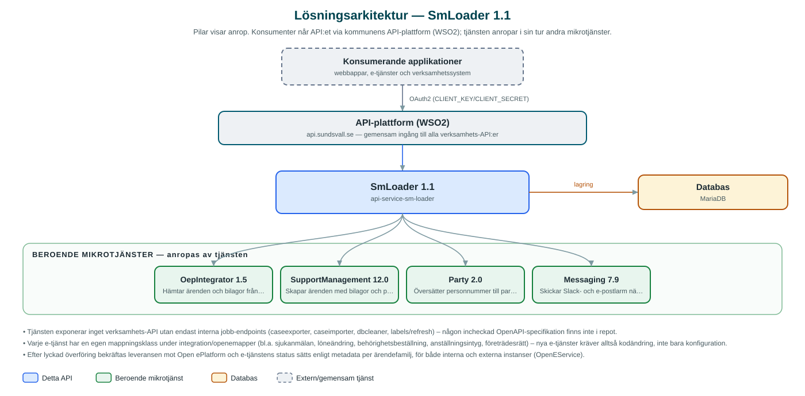

SmLoader
Bakgrundstjänst som hämtar inskickade ärenden från e-tjänsteplattformen Open ePlatform och skapar dem som supportärenden i SupportManagement.
Om API:et
SmLoader är bryggan mellan kommunens e-tjänster och supportärendehanteringen. Tjänsten hämtar regelbundet inskickade ärenden från Open ePlatform (via OepIntegrator), tolkar e-tjänstens XML-innehåll och skapar motsvarande ärenden med bilagor och parter i SupportManagement. När ärendet skapats bekräftas leveransen och e-tjänstens status uppdateras, så att den som skickat in ärendet ser att det tagits emot.
Varje e-tjänst har en egen mappningsklass i koden som vet hur just den tjänstens formulärdata ska översättas – bland annat sjukanmälan, löneändring, behörighetsbeställning, anställningsintyg och andra HR-nära e-tjänster. Vilka e-tjänstefamiljer som ska läsas in styrs av metadata i databasen.
Arbetet drivs av schemalagda jobb för export från e-tjänsten, import till SupportManagement, databasrensning och inläsning av etiketter, och samma jobb kan även startas manuellt via ett internt jobb-API. Misslyckade överföringar rapporteras till förvaltningen via både Slack och e-post genom Messaging.
Det här gör API:et
- Automatisk ärendeinläsning – Schemalagda jobb hämtar inskickade ärenden från Open ePlatform och skapar dem som ärenden i SupportManagement.
- Mappning per e-tjänst – Varje e-tjänst har en dedikerad mappningsklass som översätter formulärets XML till rätt ärendestruktur, klassificering och parter.
- Bilagor följer med – Bilagor från e-tjänsten hämtas och läggs på det skapade ärendet.
- Återkoppling till e-tjänsten – Leveransen bekräftas och e-tjänstens ärendestatus uppdateras när ärendet skapats i SupportManagement.
- Felrapportering – Misslyckade överföringar rapporteras via Slack och e-post till förvaltningen genom Messaging.
- Jobb-API och städning – Export, import, databasrensning och etikettinläsning kan startas manuellt via interna endpoints; överförda ärenden rensas bort schemalagt.
API-dokumentation
Ingen incheckad OpenAPI-specifikation hittades i källkodsförrådet; se källkoden för aktuell API-dokumentation.
Teknisk dokumentation
Nedan beskrivs hur tjänsten är uppbyggd, vilka andra tjänster den anropar och vad som krävs för att driftsätta den. Informationen är härledd ur källkoden och dess konfiguration på GitHub.
Arkitektur

API:et är en mikrotjänst (Java 25, Spring Boot via kommunens gemensamma tjänsteplattform dept44 (8.0.8), byggd med Maven). Konsumenter når tjänsten via kommunens gemensamma API-plattform (WSO2) på api.sundsvall.se – tjänsten anropas aldrig direkt. Tjänsten anropar i sin tur andra mikrotjänster i kommunens tjänstelandskap. Lagring: MariaDB med Flyway-migrationer; inlästa ärenden och metadata om e-tjänstefamiljer lagras tills överföringen är klar och rensas därefter schemalagt.
Teknikstack
- Språk: Java 25
- Ramverk: Spring Boot via kommunens gemensamma tjänsteplattform dept44 (8.0.8), byggd med Maven
- Databas: MariaDB med Flyway-migrationer; inlästa ärenden och metadata om e-tjänstefamiljer lagras tills överföringen är klar och rensas därefter schemalagt
- Övrigt: Schemalagda jobb med Shedlock-låsning, asynkron jobbkörning via internt jobb-API, XML-tolkning av e-tjänsternas formulärdata
Beroenden till andra mikrotjänster
Tjänsten anropar följande mikrotjänster. Versionerna är hämtade ur källkodens integrationsklienter.
| Tjänst | Version | Användning |
|---|---|---|
| OepIntegrator | 1.5 | Hämtar ärenden och bilagor från Open ePlatform samt bekräftar leverans och sätter status. |
| SupportManagement | 12.0 | Skapar ärenden med bilagor och parter samt läser etiketter. |
| Party | 2.0 | Översätter personnummer till partyId för ärendets parter. |
| Messaging | 7.9 | Skickar Slack- och e-postlarm när överföringar misslyckas. |
Konfiguration och driftsättning
- application.yml med URL och OAuth2-klientuppgifter för OepIntegrator, SupportManagement, Party och Messaging
- MariaDB-anslutning; databasschemat versionshanteras med Flyway
- Cron-uttryck för jobben caseprocessing, dbcleaner och labelsloader
- Metadata per e-tjänstefamilj (bl.a. vilken status som ska sättas i Open ePlatform) styrs via databasen
- Mappningsegenskaper per e-tjänst (familje-id, kategori, ärendetyp) konfigureras i application.yml
Noterbart ur källkoden
- Tjänsten exponerar inget verksamhets-API utan endast interna jobb-endpoints (caseexporter, caseimporter, dbcleaner, labels/refresh) – någon incheckad OpenAPI-specifikation finns inte i repot.
- Varje e-tjänst har en egen mappningsklass under integration/openemapper (bl.a. sjukanmälan, löneändring, behörighetsbeställning, anställningsintyg, företrädesrätt) – nya e-tjänster kräver alltså kodändring, inte bara konfiguration.
- Efter lyckad överföring bekräftas leveransen mot Open ePlatform och e-tjänstens status sätts enligt metadata per ärendefamilj, för både interna och externa instanser (OpenEService).
- Vid misslyckad överföring skickas larm både som Slack-meddelande och e-post via Messaging (SupportManagementService).
Källkod
Källkoden är öppen och finns hos Sundsvalls kommun på GitHub. I källkodsförrådet finns även instruktioner för att klona, konfigurera och starta tjänsten i egen miljö.